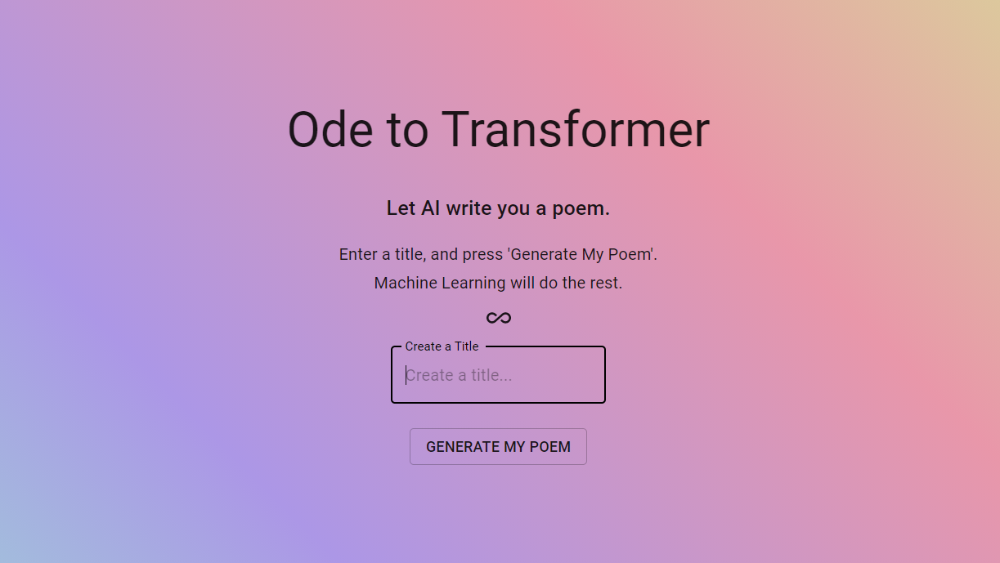

Ode to Transformer
The transformer-based neural networks have become the state of the art in Natural Language Processing, most notably in
text generation. They can create paragraphs that would easily fool you into thinking they were written by humans. But how well
could they grasp the concept of poetry?
To find out, I took one of the leading text-generation models at the time, called GPT-2, created by OpenAI, and fine-tuned it on
a large collection of English-language poetry. It did not take much fiddling to produce some really interesting results. I trained
the model in such a way that all you had to do was provide the model with a title, and it would generate the body of the poem. Here
are some of the results.
A Rainy Afternoon
I have a dream, a vision of the past;
A cloudless sky and an ocean's calm,
I am alone in my room with the stars,
And they are all asleep on their way to heaven.
The moon is shining through the window pane;
She has gone down into her silver bed:
Her face looks like a mirror that was made for me!
Dusk
She sits alone, so full and calm,
Yet looks to every hour of night,
And turns her lips in silent vow,
She dreams on a far-off sea
That is deep and sad and still.
I hosted my trained model on the Google Cloud AI Training and Prediction Service, and created a web interface with ReactJS to request
poems from the model.
